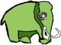
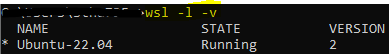
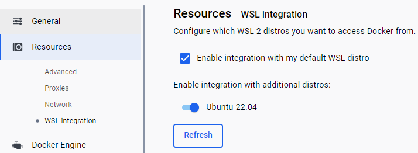
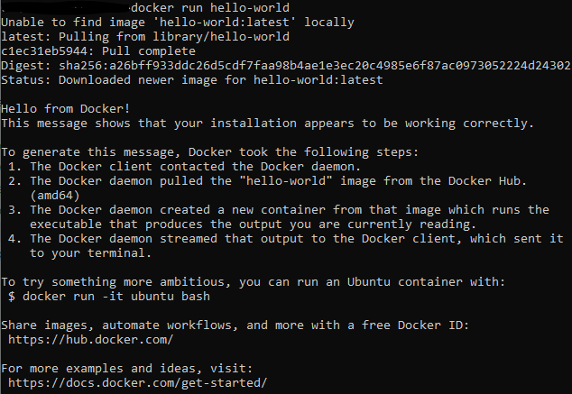
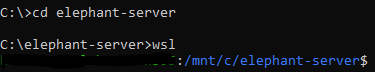
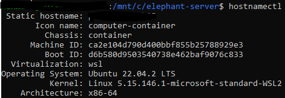
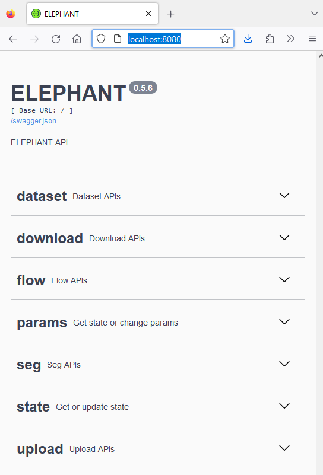
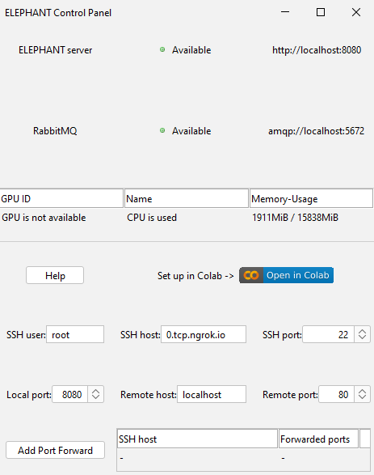

Installation of Elephant Server on Windows#
Stefan Hahmann, April 24th 2024 Johannes Soltwedel, April 24th 2024
Introduction#


ELEPHANT is a platform for 3D cell tracking, based on incremental and interactive deep learning. It implements a client-server architecture. The client application is implemented by extending Fiji/Mastodon, providing a user interface for annotation, proofreading and visualization. The server is built as a web application that serves deep learning-based algorithms.
Before installing Elephant on a powerful workstation or server, you may wish to try it out locally on your machine. This blog post will show you how you can do so, if you are using a Windows machine.
Prerequisites#
Docker Desktop#
Docker Desktop is a tool that allows you to run Docker containers on your local machine. Docker containers are lightweight, standalone, executable packages of software that include everything needed to run an application: code, runtime, system tools, system libraries and settings. Docker Desktop is available for Windows and Mac. You can download it here. Please make sure that you have installed and started Docker Desktop before proceeding. You will need to sign in to Docker Desktop with your Docker account.
Windows Subsystem for Linux (WSL)#
Windows Subsystem for Linux (WSL) is a compatibility layer for running Linux binary executables natively on Windows machines. It allows you to run a Linux distribution on your Windows machine. You can install WSL by following the instructions here.
Open a console (press Windows button, type cmd and press Enter) and run the following command to install WSL:
wsl --install
This will install the latest version of WSL and Ubuntu as the current default WSL distribution on your machine. By the time of writing this blog post, the default distribution is Ubuntu 22.04 LTS.
You can check the installation success, if you open a Linux terminal by pressing Windows button, typing wsl and pressing Enter.
You should also check, if the version number of WSL is 2. You can do this by running the following command in the console:
wsl -l -v
Expected output: 
If the version number of the Ubuntu distribution is not 2, you can upgrade it by running the following command in the Linux terminal:
wsl --set-version Ubuntu-22.04 2
Do also check the WSL integration in Docker Desktop by opening Docker Desktop and navigating to Settings > Resources > WSL Integration.
Make sure that the checkbox for the Ubuntu distribution is checked:

To check if Docker is running correctly with the WSL, you can run the following command from the console:
docker run hello-world
Expected output: 
Elephant Installation Files#
Download the Elephant installation files from the Elephant GitHub repository. Unzip the files to a folder on your local machine, e.g. C:\elephant-server.
Open a console (press Windows button, type cmd and press Enter) and navigate to the folder where you have unzipped the Elephant installation files.
Start wsl by typing wsl and pressing Enter.

You can check, if the correct Linux distribution is running:
hostnamectl
Expected output: 
GPU Support for machines with Nvidia GPUs#
If you have a machine with an Nvidia GPU, you can use the GPU to accelerate the deep learning algorithms in Elephant. You need to install the official Nvidia driver for your GPU. You can download the driver from the Nvidia website. Furthermore, you need to install CUDA. You can download CUDA from the Nvidia website.
Creating the Elephant Server#
Open a console (press Windows button, type cmd and press Enter) and navigate to the folder where you have unzipped the Elephant installation files.
Start wsl by typing wsl and pressing Enter.
Build the Elephant Docker image by running the following command (it may take some time to download the required files):
Including sudo may not be required on every machine.
sudo make build
Troubleshooting#
If you get an error message that docker is not found, you can try to install docker inside WSL.
sudo snap install docker
If you get an error message that make is not found, you can try to install make inside WSL.
sudo apt install make
If the make build command fails, you can try to pull the image from the Docker Hub by running the following command:
docker pull stefanhahmann/elephant-server:0.5.6
This will download the image from the Docker Hub, which may take some time depending on your internet connection. The version on Docker Hub may not be the latest version of Elephant, but you can use it, if building the image fails. Check Docker Hub for the Elephant server image.
Starting the Elephant Server#
Make sure that Docker Desktop is running.
Open a console (press Windows button, type cmd and press Enter) and navigate to the folder where you have unzipped the Elephant installation files.
Start wsl by typing wsl and pressing Enter.
Set the environment variable ELEPHANT_NVIDIA_GID to 0 by running the following command:
set ELEPHANT_NVIDIA_GID=0
You can now start the Elephant server by running the following command:
Again, including sudo may not be required on every machine.
sudo make launch
You can check if the server is running by opening a browser and navigating to http://localhost:8080/. You should see the Elephant server interface: 
You can now open a Mastodon project in Fiji, which brings up the client connected to the Elephant server: 
* By the time writing this blog post, there was a known issue with the Nvidia GPU support on WSL2.
You may need to update the Nvidia driver to the latest version, after the issue has been resolved in order to use the GPU for acceleration.
Stopping the Elephant Server#
You can stop the Elephant server by running the following command:
sudo make stop
Move Docker to another drive#
You may want to move the Docker installation to another drive, if you have limited space on your system drive.
You can do so with the following steps. Make sure you have stopped Docker Desktop.
The following example moves the Docker installation to the D: drive. It is assumed you have an empty folder D:\docker.
The whole process may take some time, depending on the size of the Docker installation.
wsl --shutdown
wsl --export docker-desktop-data d:\docker\docker-desktop-data.tar
wsl --unregister docker-desktop-data
wsl --import docker-desktop-data d:\docker\data d:\docker\docker-desktop-data.tar --version 2